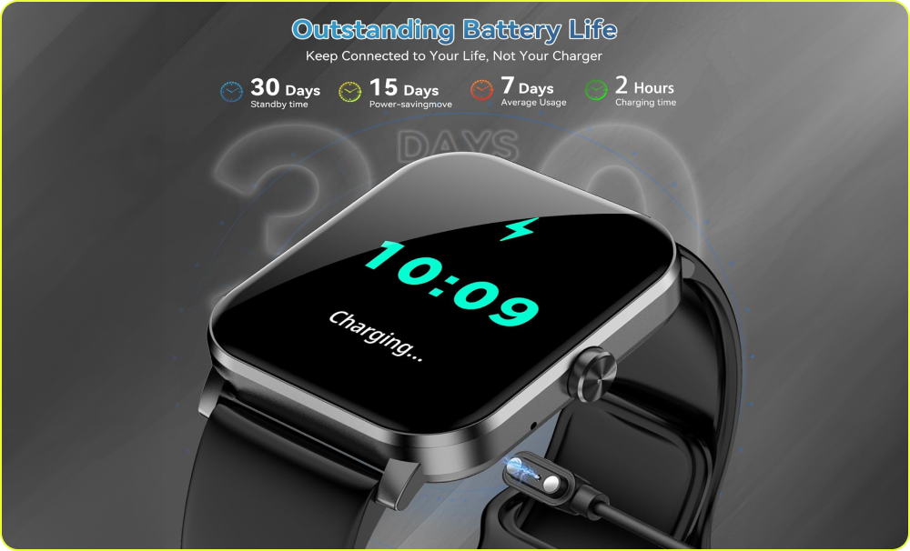

স্বাস্থ্য, ফিটনেস এবং প্রযুক্তি সবকিছু একসাথে!
"আপনার স্টাইল, আপনার স্মার্টওয়াচ"
আপনার জীবনকে আরও স্মার্ট করুন

হার্ট রেট মনিটর: নিয়মিত আপনার হার্টের অবস্থার নজর রাখুন।
রক্তের অক্সিজেন পর্যবেক্ষক: SpO2
ট্র্যাকিং দিয়ে স্বাস্থ্য সম্পর্কে সচেতন থাকুন।
বিশ্ব ক্লাসিক: শরীর ও ঘামের তথ্য বিশ্লেষণ প্রক্রিয়া সঠিক নির্দেশনা।
হার্ট রেট মনিটর: নিয়মিত আপনার হার্টের অবস্থার নজর রাখুন।
রক্তের অক্সিজেন পর্যবেক্ষক: SpO2
ট্র্যাকিং দিয়ে স্বাস্থ্য সম্পর্কে সচেতন থাকুন।
বিশ্ব ক্লাসিক: শরীর ও ঘামের তথ্য বিশ্লেষণ প্রক্রিয়া সঠিক নির্দেশনা।
স্পোর্টস মোড: বিভিন্ন ধরনের স্পোর্টস অ্যাক্টিভিটির জন্য ৩০+ মোড।
ক্যালোরি বার্ন কাউন্টিং: আপনার ব্যায়ামের সময় ক্যালোরি ক্ষত নির্ধারণ করুন।
স্টেপ ট্র্যাকিং: প্রতিদিনের পদক্ষেপের বিবরণ দেখুন।
কল, মেসেজ, এবং অ্যাপ নোটিফিকেশন সরাসরি আপনার হাতে। গুরুত্বপূর্ণ আপডেট কখনোই মিস করবেন না।
একবারের চার্জে ৭+ দিন থাকার সুবিধা। দ্রুত চার্জিং ফিচার অন্তর্ভুক্ত।
মিউজিক চালানো বা ক্যামেরা ক্লিক করা আপনার স্মার্টওয়াচ থেকে সহজ এবং সুবিধাজনক ব্যবহারের সুযোগ।